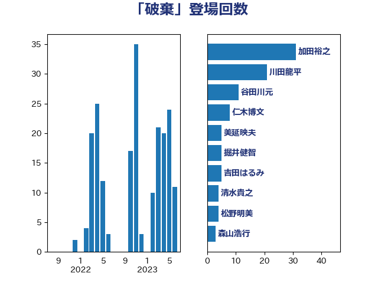

単語「破棄」

| 加田裕之 | 自由民主党 | 31 回 |
| 川田龍平 | 立憲民主党 | 21 回 |
| 谷田川元 | 立憲民主党 | 11 回 |
| 仁木博文 | 無所属 | 8 回 |
| 美延映夫 | 日本維新の会 | 5 回 |
| 掘井健智 | 日本維新の会 | 5 回 |
| 吉田はるみ | 立憲民主党 | 5 回 |
| 清水貴之 | 日本維新の会 | 4 回 |
| 松野明美 | 日本維新の会 | 4 回 |
| 森山浩行 | 立憲民主党 | 3 回 |
| 本村伸子 | 日本共産党 | 3 回 |
| 山田太郎 | 自由民主党 | 3 回 |
| 山添拓 | 日本共産党 | 3 回 |
| 小西洋之 | 立憲民主党 | 3 回 |
| 寺田学 | 立憲民主党 | 3 回 |
| 高良鉄美 | 無所属 | 2 回 |
| 須藤元気 | 無所属 | 2 回 |
| 階猛 | 立憲民主党 | 2 回 |
| 鎌田さゆり | 立憲民主党 | 2 回 |
| 鈴木義弘 | 国民民主党 | 2 回 |
| 野田国義 | 立憲民主党 | 2 回 |
| 神谷宗幣 | 参政党 | 2 回 |
| 牧山ひろえ | 立憲民主党 | 2 回 |
| 森田俊和 | 立憲民主党 | 2 回 |
| 林芳正 | 自由民主党 | 2 回 |
| 木村次郎 | 自由民主党 | 2 回 |
| 新垣邦男 | 立憲民主党 | 2 回 |
| 山本太郎 | れいわ新選組 | 2 回 |
| 加藤勝信 | 自由民主党 | 2 回 |
| 伊藤岳 | 日本共産党 | 2 回 |
| 中司宏 | 日本維新の会 | 2 回 |
| 青柳仁士 | 日本維新の会 | 1 回 |
| 阿部弘樹 | 日本維新の会 | 1 回 |
| 阿部司 | 日本維新の会 | 1 回 |
| 野村哲郎 | 自由民主党 | 1 回 |
| 道下大樹 | 立憲民主党 | 1 回 |
| 若宮健嗣 | 自由民主党 | 1 回 |
| 紙智子 | 日本共産党 | 1 回 |
| 篠原豪 | 立憲民主党 | 1 回 |
| 福山哲郎 | 立憲民主党 | 1 回 |
| 田中健 | 国民民主党 | 1 回 |
| 池畑浩太朗 | 日本維新の会 | 1 回 |
| 水野素子 | 立憲民主党 | 1 回 |
| 横山信一 | 公明党 | 1 回 |
| 柚木道義 | 立憲民主党 | 1 回 |
| 松原仁 | 立憲民主党 | 1 回 |
| 平林晃 | 公明党 | 1 回 |
| 平木大作 | 公明党 | 1 回 |
| 岸田文雄 | 自由民主党 | 1 回 |
| 岩谷良平 | 日本維新の会 | 1 回 |
| 岡本あき子 | 立憲民主党 | 1 回 |
| 山田賢司 | 自由民主党 | 1 回 |
| 寺田静 | 無所属 | 1 回 |
| 宮本岳志 | 日本共産党 | 1 回 |
| 宮口治子 | 立憲民主党 | 1 回 |
| 天畠大輔 | れいわ新選組 | 1 回 |
| 大串博志 | 立憲民主党 | 1 回 |
| 國場幸之助 | 自由民主党 | 1 回 |
| 和田政宗 | 自由民主党 | 1 回 |
| 吉田統彦 | 立憲民主党 | 1 回 |
| 吉田宣弘 | 公明党 | 1 回 |
| 古川俊治 | 自由民主党 | 1 回 |
| 倉林明子 | 日本共産党 | 1 回 |
| 佐藤正久 | 自由民主党 | 1 回 |
| 伊波洋一 | 無所属 | 1 回 |
| 井上哲士 | 日本共産党 | 1 回 |
| 上田清司 | 国民民主党 | 1 回 |